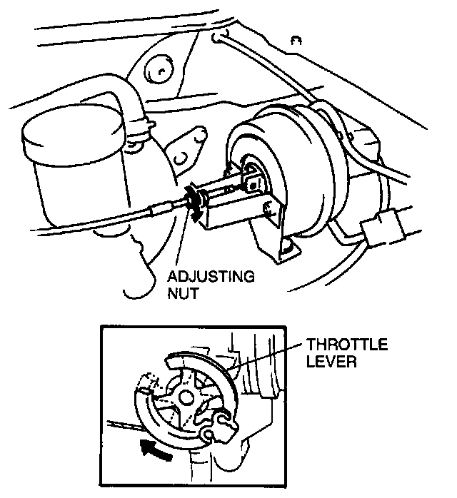
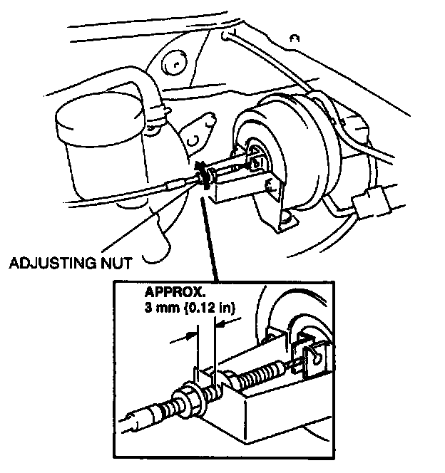

Cruise Control Servo Cable: Adjustments
ACTUATOR CABLE ADJUSTMENT
1. Turn the adjusting nut as shown in the figure until the throttle level starts moving to eliminate the actuator cable play.

2. Turn the adjusting nut as shown in the figure to obtain approximately 3 mm (0.12 in) free play.
NOTE: Turning the adjusting nut twice makes 3 mm (0.12 in) free play.
3. Tighten the inside nut.